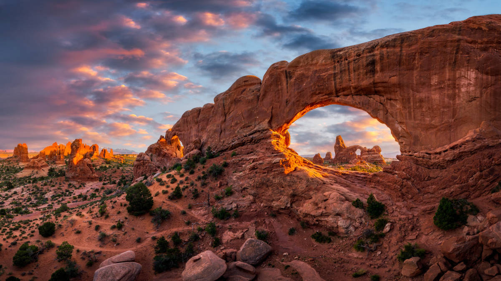

About Utah
Utah is known for its stunning landscapes, outdoor recreation, and thriving economy. With a population of over 3 million, Utah offers a high quality of life and a rapidly growing tech industry. Salt Lake City is the capital, and Utah is home to five national parks, making it a top destination for outdoor enthusiasts.
| Attribute | Details |
|---|---|
| Population | Approximately 3.2 million (2023) |
| State Capital | Salt Lake City |
| Founded | January 4, 1896 (45th state in the U.S.) |
| Known for | National parks, skiing, and a growing technology sector (nicknamed the Silicon Slopes) |
Economic Overview
Utah has one of the fastest-growing economies in the U.S., with a focus on technology, healthcare, and tourism. The state's tech sector, often referred to as Silicon Slopes
, is home to major companies such as Adobe, Qualtrics, and Vivint. Utah's low unemployment rate and high job growth make it an attractive location for both residents and businesses.
Tourism and National Parks
Utah is famous for its outdoor recreation, with five national parks: Zion, Bryce Canyon, Arches, Canyonlands, and Capitol Reef. These parks draw millions of visitors each year and contribute significantly to the state's tourism industry.
